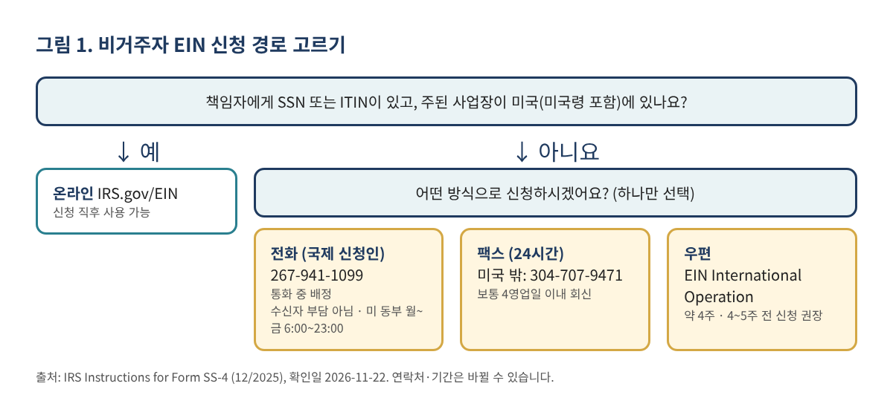
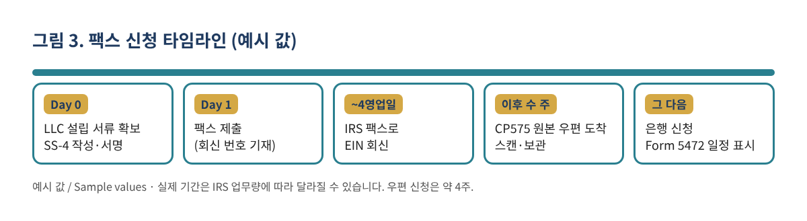
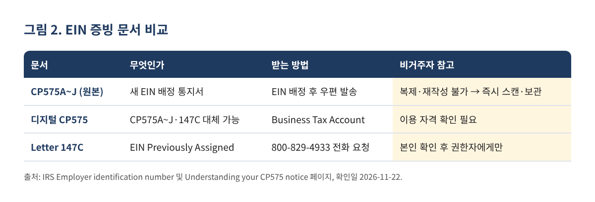

비거주자 EIN 신청법: SSN·ITIN 없이 Form SS-4로 받는 방법과 걸리는 기간, CP575·147C
미국에 LLC를 세운 한국 거주자가 가장 먼저 막히는 곳은 대개 EIN(Employer Identification Number, 사업자 납세번호)입니다. 은행 계좌를 열 때도, 연방 신고서를 낼 때도 EIN을 요구하지만, 미국 사회보장번호(SSN)나 개인 납세번호(ITIN)가 없으면 IRS 온라인 신청을 쓸 수 없습니다. 이 글은 SSN·ITIN 없이 Form SS-4로 EIN을 받는 공식 경로(전화·팩스·우편), 각 경로에 걸리는 기간, 그리고 EIN을 증명하는 문서인 CP575와 Letter 147C의 차이를 IRS 공식 안내를 기준으로 정리합니다.
이 글은 일반적인 교육용 정보이며 세무·법률·재무 자문이 아닙니다. 본인 상황은 반드시 전문가와 공식 출처로 확인하시기 바랍니다.
이런 분께 필요합니다 ① 한국에 살면서 미국 LLC를 설립했거나 설립할 예정이고, SSN·ITIN이 없는 분 ② 1인 외국인 소유 LLC로 Form 5472 신고를 위해 EIN이 필요한 분 ③ EIN 확인서(CP575)를 잃어버려 은행에 낼 증빙이 필요한 분 ④ 한국의 가족·지인이 미국 법인 EIN을 받도록 돕는 재미 한인
한국 거주자라면 함께 확인할 점 한국 거주자가 미국 회사를 소유하거나 미국 계좌를 보유하면 한국 쪽에도 신고 의무가 생길 수 있습니다. 예를 들어 외국환거래 규정에 따른 해외직접투자 신고, 해외금융계좌 신고, 국세청에 대한 해외현지법인 관련 자료 제출 등이 있습니다. 대상 여부와 기한은 개인 상황과 해마다 바뀌는 기준에 따라 달라지므로 한국 세무사 또는 거래 은행에 꼭 확인하시기 바랍니다.
1. EIN이란 무엇이고, 왜 비거주자에게도 필요한가
EIN은 IRS가 사업체에 부여하는 납세자 식별번호입니다. 개인의 SSN에 해당하는 사업체 번호라고 생각하시면 됩니다. IRS는 EIN을 무료로 발급하며, 공식 안내 페이지는 EIN 발급에 돈을 받는 웹사이트를 주의하라고 적고 있습니다.
비거주자가 소유한 미국 LLC에 EIN이 필요한 대표적인 경우는 다음과 같습니다.
- 미국 은행·핀테크 계좌 개설: 금융기관은 사업자 계좌 개설 시 EIN과 그 증빙을 요구하는 경우가 많습니다. 자세한 내용은 비거주자 미국 법인 은행 계좌 개설 글을 참고하십시오.
- Form 5472 신고: 외국인이 100% 소유한 미국 disregarded entity(1인 LLC 등)는 Form 5472 신고를 위해 EIN을 받습니다. SS-4 작성 지침에 이 경우의 기재 방법이 따로 있습니다.
- 직원 급여, 결제 대행사, 마켓플레이스 판매자 등록 등 미국 내 거래 상대방이 납세번호를 요구하는 경우
LLC 설립 자체와 설립 후 연방 신고 개요는 한국인 비거주자를 위한 미국 LLC 설립 가이드에서 다루었습니다.
2. 비거주자가 쓸 수 있는 신청 경로 4가지
IRS 공식 안내에 따르면 온라인 신청은 미국(또는 미국령)에 법적 거주지나 주된 사업장이 있는 신청인만 쓸 수 있고, 책임자(responsible party)의 SSN 또는 ITIN이 필요합니다. 주된 사업장이 미국 밖에 있으면 전화·팩스·우편으로 신청하라고 안내합니다. 아래 표는 Form SS-4 작성 지침(2025년 12월 개정판)의 내용을 정리한 것입니다.
| 경로 | 누가 쓸 수 있나 | 발급 시점(IRS 안내) |
|---|---|---|
| 온라인 | 미국·미국령에 거주지나 주된 사업장이 있고 SSN/ITIN 보유 | 신청 직후 사용 가능 |
| 전화 | 국제 신청인(international applicants)만 | 통화 중 IRS 담당자가 배정 |
| 팩스 | 누구나 (24시간 접수) | 보통 4영업일 이내 |
| 우편 | 누구나 | 약 4주 |
| 경로 | 연락처 (미국 50개 주·DC 밖에 주된 사업장이 있는 경우) |
|---|---|
| 온라인 | IRS.gov/EIN |
| 전화 | 267-941-1099 (수신자 부담 아님), 미 동부시간 월~금 6:00~23:00 |
| 팩스 | 855-215-1627(미국 내), 304-707-9471(미국 밖) |
| 우편 | Internal Revenue Service, Attn: EIN International Operation, Cincinnati, OH 45999 |
주된 사업장이 미국 50개 주 또는 DC에 있는 경우 팩스 번호는 855-641-6935, 우편 주소의 수신처는 "Attn: EIN Operation"으로 달라집니다. 전화 신청은 EIN을 받을 권한이 있고 SS-4 질문에 답할 수 있는 사람이 걸어야 하며, 담당자가 요청하면 서명한 SS-4(제3자 지정 포함)를 24시간 이내에 우편이나 팩스로 보내야 합니다. 어느 쪽에 해당하는지는 회사의 실제 사업 형태에 따라 다르므로, 판단이 어려우면 미국 세무 전문가(CPA·EA)에게 확인하시기 바랍니다.

3. Form SS-4 작성: 비거주자가 주의할 칸
Form SS-4는 1번부터 18번 줄까지 있습니다. 대부분은 회사 이름, 주소, 설립일처럼 그대로 적으면 되는 칸이지만, 비거주자 1인 LLC에서는 아래 칸을 특히 정확히 적어야 합니다.
| 줄 | 내용 | 지침이 말하는 핵심 |
|---|---|---|
| 1 | 법적 명칭 | 설립 서류(Articles of Organization 등)에 적힌 이름 그대로 |
| 7a / 7b | 책임자 이름 / SSN·ITIN·EIN | 책임자는 개인이어야 함. SSN·ITIN이 없고 발급 대상도 아니면 7b에 "foreign" 또는 N/A |
| 8a / 8b | LLC 여부 / 구성원 수 | LLC이면 8a에 예, 8b에 구성원 수 |
| 9a | 단체 유형 | 외국인 100% 소유 disregarded entity가 Form 5472용으로 신청하면 "Other"에 체크하고 "Foreign-owned U.S. disregarded entity-Form 5472" 기재 |
| 10 | 신청 사유 | 한 칸만 체크. 위 경우 "Other"에 "Foreign-owned U.S. disregarded entity filing Form 5472" 기재 |
| 12 | 회계연도 종료 월 | 역년(1~12월)이면 December |
| 13 | 향후 12개월 최대 직원 수 | 없으면 0 |
| 18 | 이전 EIN 발급 여부 | 같은 사업체로 받은 적이 있으면 표시 |
책임자(responsible party)는 실제 소유·지배하는 사람
IRS는 책임자를 사업체를 소유하거나 지배하거나 실효적으로 통제하며 자금과 자산을 관리할 수 있는 사람으로 설명합니다. 명목상 대리인(nominee)은 EIN을 신청할 수 없고 SS-4에 기재해서도 안 되며, 잘못 기재했다면 신청을 정정해 실제 책임자를 밝혀야 한다고 안내합니다. 책임자가 바뀌면 Form 8822-B로 60일 이내에 신고해야 합니다.
제3자 지정인(Third Party Designee) 칸
미국의 세무 전문가 등이 대신 질문에 답하고 EIN을 받게 하려면 이 칸을 채웁니다. 지침에 따르면 서명란까지 작성해야 위임이 유효하고, 지정인의 권한은 EIN이 배정·전달되는 시점에 끝납니다. EIN 번호는 신청한 방식(전화·팩스 등)으로 지정인에게 전달되지만, EIN 통지서는 납세자에게 우편으로 갑니다.
4. 단계별 진행 순서
- 주 정부에 LLC 설립 완료: 설립 서류의 정확한 회사명과 설립일을 확보합니다.
- 책임자 확정: 실제 소유·지배하는 개인을 7a에 기재합니다.
- Form SS-4 작성: IRS.gov에서 최신 양식과 지침을 내려받아 작성합니다. 회신받을 팩스 번호를 반드시 적습니다.
- 서명 후 제출: 팩스(24시간), 우편, 또는 국제 신청인 전화 중 하나를 고릅니다. IRS 지침은 한 사업체에 EIN이 둘 이상 생기지 않도록 사업체마다 한 가지 방법만 쓰라고 안내합니다.
- EIN 수령: 전화는 통화 중 배정, 팩스는 보통 4영업일 이내 회신, 우편은 약 4주입니다. 지침은 필요 시점보다 4~5주 앞서 우편 신청할 것을 권합니다.
- 확인서 보관: EIN 통지서(CP575 계열)를 영구 보관하고 사본을 만들어 둡니다.

5. CP575와 Letter 147C: EIN을 증명하는 문서
은행은 EIN 번호만이 아니라 IRS가 발행한 증빙을 요구하는 경우가 많습니다. IRS 안내에 나오는 문서는 다음과 같습니다.
| 문서 | 무엇인가 | 받는 방법 |
|---|---|---|
| CP575A~J (원본 통지서) | 새 EIN 배정 통지서(Notice of New EIN) | EIN 배정 후 우편 발송. IRS는 원본을 복제하거나 다시 만들 수 없다고 안내 |
| 디지털 CP575 | Business Tax Account에서 내려받는 EIN 확인 통지. 원본 CP575A~J와 Letter 147C를 대신할 수 있음 | Business Tax Account 이용 자격이 있는 경우 Tax Records 메뉴 |
| Letter 147C | "EIN Previously Assigned" 확인서 | Business & Specialty Tax Line 800-829-4933에 전화해 요청 (월~금 현지시간 7:00~19:00) |
| Entity transcript | 사업체 납세 기록 사본 | IRS 사업체 transcript 요청 절차 |
Business Tax Account는 이용 자격이 유형별로 정해져 있고 제3자 본인 인증을 거칩니다. IRS 페이지는 SSN·ITIN이 없는 외국인 소유주가 이용할 수 있는지는 따로 밝히지 않으므로, 비거주자는 원본 CP575를 받는 즉시 안전하게 보관하는 것이 현실적으로 중요합니다.

6. 예시: 가상의 회사로 따라가 보기
아래는 이해를 돕기 위한 가상 사례이며 실제 인물·회사와 관계가 없습니다. 날짜는 모두 예시 값입니다.
서울에 사는 김하늘 씨는 미국의 한 주에 1인 LLC인 Hanbit Craft LLC를 설립했습니다. SSN·ITIN이 없고 미국 내 사무실이나 직원도 없습니다. 김 씨는 SS-4의 7b에 "foreign", 9a에 "Other – Foreign-owned U.S. disregarded entity-Form 5472", 10에 "Other – Foreign-owned U.S. disregarded entity filing Form 5472"를 적고, 회신용 팩스 번호를 기재해 미국 밖 팩스 번호 304-707-9471로 보냈습니다.
| 예시 값 / Sample values | 날짜 | 내용 |
|---|---|---|
| Day 0 | 2026-03-02 (월) | LLC 설립 서류 확보, SS-4 작성·서명 |
| Day 1 | 2026-03-03 (화) | 팩스 제출(미국 밖 번호) |
| Day 1 + 4영업일 이내 | ~2026-03-09 (월) | IRS 팩스로 EIN 회신 (IRS 안내상 보통 4영업일 이내) |
| 이후 수 주 | 2026-03 하순~4월 | CP575 원본 우편 도착, 스캔·보관 |
| 그 다음 | 2026-04 | 은행 계좌 신청, 연말 Form 5472 일정 표시 |
IRS 지침은 사업체마다 한 가지 신청 방법만 쓰라고 안내하므로, 회신이 늦어지더라도 같은 서류를 다른 경로로 다시 내기 전에 이 점을 고려해야 합니다. 실제 처리 기간은 IRS 업무량에 따라 달라질 수 있습니다.
7. 자주 하는 실수
- EIN을 유료로 대신 받아 준다는 사이트를 공식 창구로 오해: EIN 발급 자체는 무료입니다.
- 미국 주소가 있다는 이유로 온라인 신청 시도: 온라인 신청은 SSN/ITIN이 필요하고 주된 사업장이 미국에 있어야 합니다. 주소를 사실과 다르게 적어서는 안 됩니다.
- 명목상 대리인(nominee)을 책임자로 기재: IRS는 실제 책임자를 기재하도록 요구합니다.
- 9a·10줄을 일반 법인처럼 작성: 외국인 소유 disregarded entity는 지침의 문구대로 적습니다.
- 회신용 팩스 번호 누락: 팩스 신청인데 회신 번호가 없으면 EIN을 팩스로 받을 수 없습니다.
- 여러 경로로 중복 신청: IRS는 한 사업체에 EIN이 둘 이상 생기지 않도록 한 가지 방법만 쓰라고 안내합니다.
- CP575 원본 분실: IRS는 원본을 복제하거나 다시 만들 수 없다고 안내하므로 받는 즉시 스캔해 두십시오.
8. 자주 묻는 질문
Q1. EIN을 받으려면 ITIN부터 받아야 하나요?
SS-4 지침은 책임자가 SSN·ITIN이 없고 발급 대상도 아니면 7b에 "foreign" 또는 N/A를 적도록 안내합니다. 따라서 EIN 신청만을 위해 ITIN이 필요한 것은 아닙니다. 다만 다른 목적(개인 소득세 신고 등)으로 ITIN이 필요한지는 별도로 확인해야 합니다.
Q2. 전화와 팩스 중 무엇이 더 빠른가요?
IRS 지침에 따르면 국제 신청인 전화는 통화 중에 담당자가 EIN을 배정하고, 팩스는 보통 4영업일 이내, 우편은 약 4주입니다. 전화는 EIN을 받을 권한이 있는 사람이 걸어야 하며, 수신자 부담 번호가 아니므로 국제전화 요금이 생길 수 있습니다.
Q3. CP575를 잃어버렸는데 은행이 증빙을 요구합니다.
IRS는 Business & Specialty Tax Line(800-829-4933)에서 Letter 147C를 요청하거나, 자격이 되면 Business Tax Account에서 디지털 CP575를 내려받는 방법을 안내합니다. 이 전화는 IRS가 본인 확인을 거친 뒤 권한이 있는 사람에게만 정보를 알려 줍니다.
Q4. 하루에 여러 개의 EIN을 받을 수 있나요?
IRS는 신청 방법(온라인·전화·팩스·우편)과 관계없이 EIN 발급을 책임자 1인당 하루 1개로 제한합니다. 여러 법인을 운영할 계획이라면 일정에 반영하십시오.
Q5. EIN을 받은 뒤 소유주가 바뀌면 어떻게 하나요?
책임자가 바뀌면 Form 8822-B로 60일 이내에 IRS에 신고해야 합니다. 소유 구조 변경이 다른 신고에 주는 영향은 미국 세무 전문가에게 확인하시기 바랍니다.
9. 신청 전 체크리스트
- ☐ 주 정부 LLC 설립 서류의 정확한 회사명·설립일 확인
- ☐ 책임자(실제 소유·지배하는 개인) 확정
- ☐ IRS.gov에서 최신 Form SS-4와 지침 내려받기
- ☐ 7b: SSN·ITIN이 없으면 "foreign" 또는 N/A
- ☐ 9a·10: 외국인 소유 disregarded entity 문구 확인
- ☐ 회신받을 팩스 번호 기재 및 서명
- ☐ 제출 경로 1개 선택(전화·팩스·우편), 제출일 기록
- ☐ CP575 원본 수령 즉시 스캔·영구 보관
- ☐ 한국 측 신고 의무를 한국 세무사·거래 은행에 확인
함께 읽으면 좋은 글
면책 안내: 이 글은 일반적인 교육용 정보이며 세무·법률·재무 자문이 아닙니다. IRS 양식, 연락처, 처리 기간, 금융기관 정책은 수시로 바뀔 수 있으므로 신청 전 IRS.gov 등 공식 출처에서 최신 내용을 확인하십시오. 개인의 구체적 상황은 미국 CPA·EA·변호사, 한국 측 의무는 한국 세무사와 상담하시기 바랍니다.
출처
- IRS – Instructions for Form SS-4 (12/2025) (확인일 2026-11-22)
- IRS – Get an employer identification number (확인일 2026-11-22)
- IRS – Employer identification number (확인일 2026-11-22)
- IRS – Understanding your CP575 notice (확인일 2026-11-22)
- IRS – Business tax account (확인일 2026-11-22)
- IRS – Responsible parties and nominees (확인일 2026-11-22)